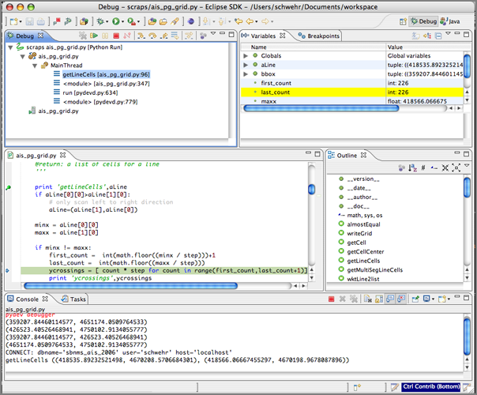
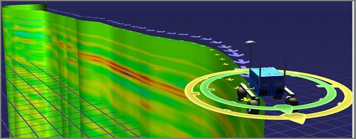
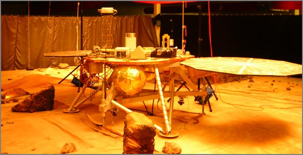
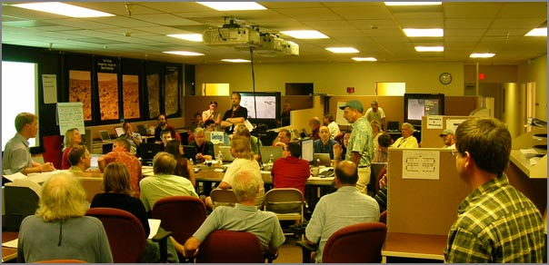
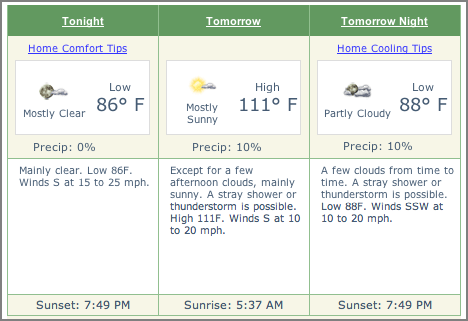
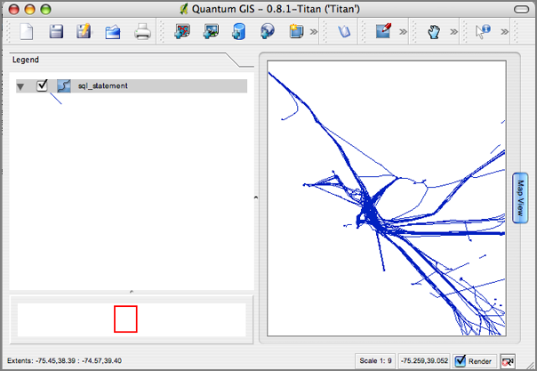
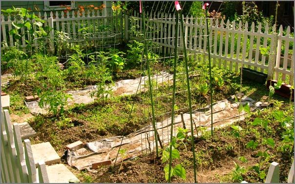
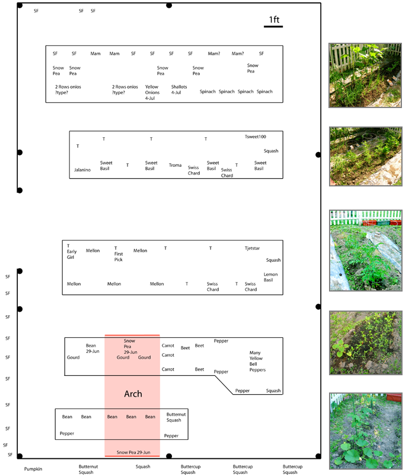
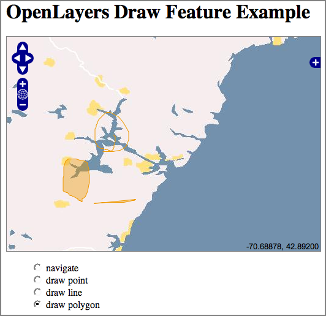

07.31.2007 20:33
Higher resolution video of Simulated Phoenix Launch
So there is a second video that is
higher resolution. For Koji to search on, these two number are
critical: CL#07-2263 and CL#06-3657.
watch
watch
07.31.2007 15:59
Finding what depends on a fink package
Just saw this go across the fink irc
channel. I've always wondered if there is an easy way to see what
packages depend on a particular package. My main goal is to see
when a package no longer has any others that require it to still be
alive. For example, coin44 is still in fink. Here is an example of
finding the "reverse dependencies."
apt-cache showpkg simage27-shlibs Package: simage27-shlibs Versions: 1.6.1-1003(/sw/var/lib/apt/lists/_sw_fink_dists_unstable_main_binary-darwin-powerpc_Packages)(/sw/var/lib/dpkg/status)
Reverse Depends: simage27,simage27-shlibs 1.6.1-1003 coin45-shlibs,simage27-shlibs 1.6.1-1001 density,simage27-shlibs Dependencies: 1.6.1-1003 - libogg-shlibs (0 (null)) libsndfile1-shlibs (0 (null)) libvorbis0-shlibs (0 (null)) mjpegtools2-shlibs (2 1.6.2-1003) flac-shlibs (2 1.1.1-1001) darwin (2 8-1) Provides: 1.6.1-1003 - Reverse Provides:
07.31.2007 13:18
Phoenix launch delayed 1 day
Rumor on the street is that the
Phoenix Mars Lander launch has been postponed one day to Saturday,
Aug 4th. The launch countdown on the mission page still
shows Friday.
07.31.2007 11:58
AP Phoenix Mars Lander article on Wired
NASA Probe
to Explore Martian Arctic
... But before it can start its work, the Phoenix Mars Lander must survive landing on the surface of the rocky, dusty Red Planet, which has a reputation of swallowing manmade probes. Of the 15 global attempts to land spacecraft on Mars, only five have made it. . "Mars has the tendency to throw you curve balls," said Doug McCuistion, who heads the Mars program at NASA headquarters. . Phoenix, which is pieced from old hardware that was shelved after two embarrassing Mars failures in 1999, will blast off from Cape Canaveral, Fla., aboard a Delta II rocket on a 423-million-mile trip. The three-week launch window opens Aug. 3. ...
07.31.2007 11:55
GCN interview with Michael Jones of Google Earth
GCN interview with
Michael Jones, Google Earth Chief Technologist
When it comes to getting new photographic equipment, most people would settle for buying a new camera. Not Google technologist Michael Jones he has actually built his own four-megapixel digital camera. This intuitiveness also shows through in the company products and services he oversees, including Google Earth, Google Maps and the companys local search service. Jones was formerly chief technology officer at Keyhole, the company that developed the technology used in Google Earth. He was also director of advanced graphics at SGI. ...
07.31.2007 09:12
fink and the Phoenix Mars Lander
From Sean over at zcologia.com wrote this in his Mars Lander
Blogging:
For the linux boxes, in addition to running all sorts of software for the flight operations, there is a lot of use of OpenOffice.
Now in my group, the story is pretty different. We like to abuse our macs with all sorts of craziness. There is a slew of mac minis running around for all sorts of video streaming. There are desktops for Shake. Tons of Java stuff being done on the Macs. I personally make sure that my laptop stays nice and hot while processing all sorts of data products while taking notes in emacs.
This was only ORT4, so a lot of people and processes are still hiding out of site.
Kurt Schwehr, who's making fink packages of OWSLib, Quadtree, and PCL-Core, is blogging about working on the Phoenix Mars Lander. Are these packages going to Mars, or helping from Earth? Let us know if the Lab can be of any assistance.So how much of fink is being used for Phoenix? Not a huge amount. There are quite a few Mac laptops around the mission, but a quick survey of Mac toting people at the Operations Readiness Test found only one person who is a big user of fink outside of the group that I am in. There were many mac users who did not know about fink. It seems that mac use is dominated by powerpoint, photoshop, iphoto, IDL, matlab, thunderbird, safari, and terminals to log into linux boxes. Linux still completely dominates the unix like tools world for flight operations. And there just are not many windows boxes around.
For the linux boxes, in addition to running all sorts of software for the flight operations, there is a lot of use of OpenOffice.
Now in my group, the story is pretty different. We like to abuse our macs with all sorts of craziness. There is a slew of mac minis running around for all sorts of video streaming. There are desktops for Shake. Tons of Java stuff being done on the Macs. I personally make sure that my laptop stays nice and hot while processing all sorts of data products while taking notes in emacs.
This was only ORT4, so a lot of people and processes are still hiding out of site.
07.30.2007 21:39
python unittest trick
I am writing a gridding class in
python that is starting to have quite a few test TestCase classes.
I couldn't thing of a really good way to turn off most of the test
cases so that I can more easily focus on the cases that are
breaking. I finally settled on using inheritance to turn off the
classes of tests that I am not interested in using. Here is an
example of a working test case that I would like to turn off for a
short time.
NOTE: I got some feedback on this one here... Selectively Running Python Tests [Sean at zcologia.com]. Sorry about the no comment thing. I need to get around to using something other than nanoblogger.
from grid import Grid
import unittest
class TestGrid(unittest.TestCase):
def testInit10(self):
'init with unit grid'
g = Grid(0,0, 1,1, 1)
self.failUnlessEqual(g.xNumCells,1)
self.failUnlessEqual(g.yNumCells,1)
self.failUnlessAlmostEqual(g.maxx,1)
self.failUnlessAlmostEqual(g.maxy,1)
Using inheritance, I can turn off everything in test grid by
creating a dummy bogus_unittest.py. I am not currently using many
features in the TestCase class, so this is pretty simple.
'''
Dummy standin for unittest so that some groups of test do not get run
when they inherit this module instead of the normal unittest.
'''
class TestCase:
def failUnlessEqual():
pass
def failUnlessAlmostEqual():
pass
Now, I tweak my test cases such that the groups that I don't want
to run inherit from bogus_unittest.TestCase.
from grid import Grid
import unittest
import bogus_unittest
class TestGrid(bogus_unittest.TestCase):
def testInit10(self):
'init with unit grid'
g = Grid(0,0, 1,1, 1)
self.failUnlessEqual(g.xNumCells,1)
self.failUnlessEqual(g.yNumCells,1)
self.failUnlessAlmostEqual(g.maxx,1)
self.failUnlessAlmostEqual(g.maxy,1)
Now everything in the TestGrid class is not being run when I fire
off the unittests. I still have issues with execution order, which
is why my individual tests have names line testInit10. What
is a good technique to order tests such that the complicated, far
reaching stuff is run after the basics?NOTE: I got some feedback on this one here... Selectively Running Python Tests [Sean at zcologia.com]. Sorry about the no comment thing. I need to get around to using something other than nanoblogger.
07.30.2007 13:17
Closed door google meeting
Attendance is by invitation only. For inquiries please contact NASA Ames.
Google Earth has emerged as a revolutionary platform that brings geospatial content and browsing capabilities to hundreds of millions of people worldwide. NASA Ames and other members of the NASA geospatial data community will be investigating the technical and strategic impacts, possibilities, and challenges associated with this exciting tool. This two-day workshop, being held at NASA Ames on July 30th and 31st, 2007, will include presentations from a range of scientists, engineers, and managers who have been exploring the potential of Google Earth as an outreach and data visualization tool, as well as a range of related technical and policy discussions.
Topics to include: Techniques for data display and visualization in Google Earth; software tools to assist in developing KML content; the interaction between Google Earth, KML, and open geospatial standards; the future of NASA Featured Content in Google Earth; strategies, standards, and funding options for NASA outreach using Google Earth; and approaches to expanding Google Earth to the Moon, Mars, and beyond.
07.29.2007 16:58
pydev and eclipse
At the prompting of several different
people at JPL, I am trying to dig into Eclipse again. I've got
pydev installed, but am still trying to understand exactly how this
is all supposed to work. subclipse seems really really slow at
checking out files and then I was a little surprised at how the sub
packages were arranged on disk. In the process, I finally finished
packaging pylint for fink as pydev can use pylint. Here are the
general packages in Eclipse that I have installed:
- http://download.eclipse.org/tools/mylyn/update/e3.3 Mylyn
- http://pydev.sf.net/updates/ Python developement
- http://download.eclipse.org/technology/buckminster/updates Buckminster is needed by subclipse
- http://subclipse.tigris.org/update_1.2.x Subclispe for svn repositories
- http://download.pipestone.com/eclipse/updates/ PHPEclipse
- http://eclipsexslt.sourceforge.net/update-site eclipseXSLT

07.29.2007 11:55
Catherine Johnson selected as a participating scientist for MESSENGER
Just talked to Catherine Johnson (one
of my PhD committee members) and found out that she a part of the
MESSENGER team. announcement
[ubc.ca]
Catherine Johnson has been selected as a participating scientist for the MESSENGER (MErcury Surface, Space ENvironment, GEochemistry, and Ranging) mission - NASA's current mission to Mercury.
07.27.2007 19:11
fink binary deb mirror goodness
I finally got around to trying out
having my own local deb server for fink compiles and this is really
awesome! I did an install of coin3d and it took about 30 seconds
rather than the hours that the original build took. I've done a
powerpc box and now I need to do another to serve up to the many
intel boxes around here. To bad this is restricted to within the
local firewalls.
I used RangerRick's instructions here: Sharing the Fink
On the server box, I added this set of lines to /etc/httpd/httpd.conf and then turned on personal web sharing:
Finally, run "fink scanpackages" on the client.
I used RangerRick's instructions here: Sharing the Fink
On the server box, I added this set of lines to /etc/httpd/httpd.conf and then turned on personal web sharing:
Alias /fink /sw/fink <Directory /sw/fink> Options Indexes FollowSymLinks </Directory>Then on the client, I added these three lines to /sw/etc/apt/sources.list:
deb http://my.ppc.server.com/fink stable main crypto deb http://my.ppc.server.com/fink unstable main crypto #deb http://my.ppc.server.com/fink local mainI figured it would be good to leave out the local stuff.
Finally, run "fink scanpackages" on the client.
07.27.2007 12:55
JBoss data flow management
Just had a meeting about JBoss for
processing large datasets. JBoss (owned by RedHat) is an open
source middle system for business logic. The stuff that I heard
about this morning (jBPM) sounds like it would
be a good way to handle a cluster of machines for processing large
volumes of multibeam and/or AIS data.
I've heard about JBoss before, but have never had a chance to see it in action before.
I've heard about JBoss before, but have never had a chance to see it in action before.
07.25.2007 19:56
Fink updates for 3D graphics (SIM)
I've started doing some updates for
fink to support spacecraft work in SSV at JPL. Some of the first of
that is to get the Coin and SoQt packages up to the latest stable
versions. I've add spidermonkey to the Coin build for Javascript
support. If there is anyone out there that could test that
functionality and report back to me, I would hugely appreciate it.
Next on the list is to get density to build on both PPC and Intel
macs. I hardcoded -mpowerpc in the makefile in density-0.20, so I
need to undo that and test it. There may also be some byte order
issues in there too.
On the list of things to package (if possible) are some of the NASA Open Source releases (including the Vision Workbench). A note to who ever does the NASA software releases: please version your source releases. I will most likely have to repackage the source blobs to have version numbers and stash them on one of my work web servers to preserve them against the same source file changing down the road as new versions are released.
On the list of things to package (if possible) are some of the NASA Open Source releases (including the Vision Workbench). A note to who ever does the NASA software releases: please version your source releases. I will most likely have to repackage the source blobs to have version numbers and stash them on one of my work web servers to preserve them against the same source file changing down the road as new versions are released.
07.25.2007 19:39
A helping hand for AIS decoding
I had a request for help in
understanding the decoding of AIS packets by a software developer.
Here is what I wrote up on the process. He wanted an example for
the MMSI/UserID field.
First take a look at the whole decode from my noaadata package:
My python decoding of the bits for UserID (aka MMSI) in ais_msg_1.py:
First take a look at the whole decode from my noaadata package:
cd ~/projects/src/noaadata/ais
./ais_msg_1.py -d '!AIVDM,1,1,,A,15`>DT00002BckegQW1P02in00Rg,0*41'
position:
MessageID: 1
RepeatIndicator: 0
UserID: 377722000
NavigationStatus: 0
ROT: 0
SOG: 0
PositionAccuracy: 0
longitude: 32.04371666666666666666666667
latitude: -28.79188333333333333333333333
COG: 0
TrueHeading: 88
TimeStamp: 59
RegionalReserved: 0
Spare: 0
RAIM: False
Here is the binary that I get...
ipython
In [1]: import binary
In [2]: binary.ais6tobitvec('15`>DT00002BckegQW1P02in00Rg')
Out[2]: <BitVector.BitVector object at 0x129ff10>
In [3]: print binary.ais6tobitvec('15`>DT00002BckegQW1P02in00Rg')
00000100010110100000111001010010010000000000000000000000000000001001
00101010111100111011011011111000011001110000011000000000000000101100
01110110000000000000100010101111
By hand, here is how the characters work for me:
000001 000101 101000 001110 010100 1001000 000000 000000 000000 000000
1 5 ` & > D T 0 0 0
====== ==**** ****** ****** ****** ******* *===== ====== ====== ======
012345 678901 234567 890123 456789 0123456 789012 345678 901234 567890
0 1 2 3 4 5 6
0101 101000 001110 010100 1001000 0
The above shows first the bits broken up by the groups of 6 that
make up the characters. Then the 2nd line show the character that
represents those bits in the NMEA string. Then I use '-' and '*' to
show the location of the MMSI bits with the position numbers below.
Finally I show the bits that are pulled out for the
MMSI/UserID.My python decoding of the bits for UserID (aka MMSI) in ais_msg_1.py:
def decodeUserID(bv, validate=False):
return int(bv[8:38])
So now, pull out the bits for the UserID:
In [5]: bv = binary.ais6tobitvec('15`>DT00002BckegQW1P02in00Rg')
In [6]: print bv[8:38]
010110100000111001010010010000
Now convert that binary to the ship MMSI/UserID:
In [7]: print int(bv[8:38]) 377722000
Hope that helps. Now if I can figure out why postgres82 currently does not like me.
07.25.2007 15:24
Making a typo in the mac /etc/rc startup file
I just had the pleasure of finding
out what happens when you make a typo while editing /etc/rc on the
mac. I increase the shared memory buffer on a mac workstation at
JPL before running postgreSQL and on reboot I got a black screen
with a "root%" prompt. Oops! However vi and emacs both still
worked. I found that I had accidentally capitalized the "if"
following the sysctl. I found the bug by typing ". /etc/rc".
With help from dmacks, I now know where to find the descriptions for what these shared memory parameters mean:
Now it is back to work duplicating a database on a local machine for testing qgis and ossim planet.
With help from dmacks, I now know where to find the descriptions for what these shared memory parameters mean:
grep SHM /usr/include/sys/sysctl.h #define KSYSV_SHMMAX 1 /* int: max shared memory segment size (bytes) */ #define KSYSV_SHMMIN 2 /* int: min shared memory segment size (bytes) */ #define KSYSV_SHMMNI 3 /* int: max number of shared memory identifiers */ #define KSYSV_SHMSEG 4 /* int: max shared memory segments per process */ #define KSYSV_SHMALL 5 /* int: max amount of shared memory (pages) */The correct method is to edit the sysctl.conf file, but I have not looked up the syntax yet.
Now it is back to work duplicating a database on a local machine for testing qgis and ossim planet.
07.25.2007 06:32
Khatib and his robots make the news
Scientists endeavor to make humanoid robots more graceful
Infants learn how to move by recognizing which movements and positions cause them physical discomfort and learning to avoid them. Computer science Professor Oussama Khatib and his research group at the Stanford Artificial Intelligence Laboratory are using the same principle to endow robots with the ability to perform multiple tasks simultaneously and smoothly.Khatib was my computer science advisor back when I was at Stanford.
07.24.2007 13:01
GPS for Airplanes (ADS-B)
I am a little confused. I thought
that the Automatic Identification System (AIS) for aircraft already
included GPS information, but I guess I was wrong. Popular
Mechanics has an article on ADS-B
From Wikipedia: Automatic dependent surveillance-broadcast
For those of you brave enough to read slashdot comments, there is a bit more information here: Inside FAA's GPS-Based Air Traffic Control [slashdot]
Now if we can just solve where Autonomous Underwater Vehicles (AUV) fit into the AIS scheme of things and would some vender please create a super small AIS transponder that we could use on an AUV. It won't belong before we have a pile of AUV bits from a ship strike.
... Several airlines aren't waiting for government action: Cargo carrier UPS Airlines has already equipped nearly 300 of its planes and its main airport hub in Louisville, Ky., with ADS-B technology. "It allows us to do simultaneous approaches to parallel runways, which we couldn't do with existing surveillance," says UPS director of operations Karen Lee. "It leaps the old technology by 15 generations." By shortening flight times and using more efficient approach paths, UPS expects to save about 800,000 gallons of fuel annually. ...
From Wikipedia: Automatic dependent surveillance-broadcast
ADS-B is inherently different from ADS-A, in that ADS-A is based on a negotiated one-to-one peer relationship between an aircraft providing ADS information and a ground facility requiring receipt of ADS messages. For example, ADS-A reports are employed in the Future Air Navigation System (FANS) using the Aircraft Communication Addressing and Reporting System (ACARS) as the communication protocol. During flight over areas without radar coverage (e.g., oceanic, polar), reports are periodically sent by an aircraft to the controlling air traffic regionReading the rest of the article, ADS-B looks very much like AIS for ships.
For those of you brave enough to read slashdot comments, there is a bit more information here: Inside FAA's GPS-Based Air Traffic Control [slashdot]
Now if we can just solve where Autonomous Underwater Vehicles (AUV) fit into the AIS scheme of things and would some vender please create a super small AIS transponder that we could use on an AUV. It won't belong before we have a pile of AUV bits from a ship strike.
07.24.2007 12:40
spatialreference.org
http://spatialreference.org/
looks like a nice reference for EPSG codes (proj4 projection
info).
07.23.2007 06:39
Bailey and his summer haircut
I am currently required to give out
pictures of Bailey this month and next. Here are the ones for this
month.
Before and after his summer hair cut:
Before and after his summer hair cut:
07.20.2007 16:20
Viz interface does ground penetrating radar (GPR)
This is one of those things that I
really wish I had done. About 10 years ago, Alex Fossil and I
talked about merging his ground penetrating radar (GPS) runs with
my 3D stereo terrains from our work in Haughton Crater on Devon
Island (the Candian arctic). I ran out of time to do more than just
show that I the stereo system worked fantastically in artic
mars-like terrain. I have long wanted to do this visualization and
now Ames has gone an done it. This graphic is really awesome!
I grabbed this image from the project's details page and the original image is here
I hope they post a mixed GPR and 3D stereo vision derived surface morphology!


I grabbed this image from the project's details page and the original image is here

I hope they post a mixed GPR and 3D stereo vision derived surface morphology!
07.20.2007 12:17
ORT4 is done
We are back from ORT 4. The test was
a huge success from our point of view. We learned a ton, trained up
on lots of mission software, and started the integration process
with the science teams. Here are some photos that show a bit of ORT
4.
First, here is the space craft test bed in the PIT. Right now, there are just foam blocks and a small portion of floor replaced with a sandbox, but in future ORT testing, there will be progressively more interesting terrains for the teams to explore.
This is a blurry me standing in front of the test bed but outside the static electricity safety zone. Dry desert air combined with sand means that I am going nowhere near the electronics.
Out in the vast open area around the pit, there is a mock-up that looks more like the actual spacecraft than the test bed.
Nick and Neil were busy working to get all the equipment setup for ORT 4 and future events at the Science Operation Center (SOC). Here they are figuring out how best to configure a Mac mini to display mosaics of images from the Surface Science Imager (SSI) cameras on the old MERboard plasma displays.
This is a shot from one of the Sol 3 science team meetings. This is probably the midpoint meeting about mid day. The SOC can be a busy and crowded place.
There are areas inside the SOC that will become the press area (I think). The project is still working to ramp up and get equipment and furniture into the building, so some spaces are just starting to get setup.
There are some fun things to discover in Tucson. Here is something I saw about 2 blocks from where I was staying.
The next big Phoenix event is the launch of the spacecraft on August 3rd.
First, here is the space craft test bed in the PIT. Right now, there are just foam blocks and a small portion of floor replaced with a sandbox, but in future ORT testing, there will be progressively more interesting terrains for the teams to explore.

This is a blurry me standing in front of the test bed but outside the static electricity safety zone. Dry desert air combined with sand means that I am going nowhere near the electronics.
Out in the vast open area around the pit, there is a mock-up that looks more like the actual spacecraft than the test bed.
Nick and Neil were busy working to get all the equipment setup for ORT 4 and future events at the Science Operation Center (SOC). Here they are figuring out how best to configure a Mac mini to display mosaics of images from the Surface Science Imager (SSI) cameras on the old MERboard plasma displays.
This is a shot from one of the Sol 3 science team meetings. This is probably the midpoint meeting about mid day. The SOC can be a busy and crowded place.

There are areas inside the SOC that will become the press area (I think). The project is still working to ramp up and get equipment and furniture into the building, so some spaces are just starting to get setup.
There are some fun things to discover in Tucson. Here is something I saw about 2 blocks from where I was staying.
The next big Phoenix event is the launch of the spacecraft on August 3rd.
07.17.2007 21:05
Tucson Monsoon Season
Tuscon has been a lot of fun this
week and a real wild ride. The weather is generally hot. I made the
mistake of leaving food in my car during >103° F temps.
Apples and bread do not cope well with that. Yesterday, Nick, Neil,
and I got in the car to head for dinner. The temps were over 100.
By the time we got to the restaurant, the sky had let loose and the
temperature had dropped more than 30 degrees. This was serious rain
that made even New Hampshire rain look like nothing. Then by the
time we were done, the temperatures were back up and the streets
were dry.
Many of the pictures I've been taking this week are restricted until after the Operations Readiness Test is over. Until then, here is a picture from two days ago.
Today was also the CCOM NOAA review. I gave a talk from the Science Operation Center in Tucson back to an audience in Durham, NH. It seemed to work well. It was very strange giving a talk where I could not see the audience. WebEx gets a thumbs up from me. I don't quite understand how I am supposed to point at things on the screen as I am talking and I haven't actually seen what the output looks like, but it went well.
Many of the pictures I've been taking this week are restricted until after the Operations Readiness Test is over. Until then, here is a picture from two days ago.
Today was also the CCOM NOAA review. I gave a talk from the Science Operation Center in Tucson back to an audience in Durham, NH. It seemed to work well. It was very strange giving a talk where I could not see the audience. WebEx gets a thumbs up from me. I don't quite understand how I am supposed to point at things on the screen as I am talking and I haven't actually seen what the output looks like, but it went well.
07.16.2007 08:49
NASA ARC IRC in Haughton Crater with a robot
The Haughton Crater Site Survey
Field Test is currently underway at Devon Island way up in the
north east corner of Canada. I hear that new pictures are coming
soon.
07.15.2007 14:03
Phoenix - Operational Readines Test (ORT) 4
Three of us drove from Pasadena to
Tucson yesterday and are now training for Operations Readiness Test
(ORT) #4. The ORT starts tomorrow morning. Lots of work to do and
people to meet. The Science Operations Center (SOC) is very busy
today and there are lots of new faces.
07.13.2007 19:36
Hotter than the surface of the sun - Quartzsite, Arizona
I decided to check out the weather at
a random citing along the route that I am driving tomorrow as three
of us head from JPL in Pasadena to the Phoenix Science Operation
Center (SOC) in Tucson, AZ tomorrow. Ouch... high of 111° F.
Training for ORT 4 (that would be "operational readiness test")
starts Sunday and the test begins on Monday. A big part of this
week for me has been getting oriented back to spacecraft operations
and remembering all the cool tools that exist throughout the SSV
and MIPL groups (that would be Solar System Visualization and
Multi-mission Image Processing Lab). Watch out... here come the
acronyms 

07.13.2007 09:16
Building an ESRI Shape File of an area from AIS
Here are some quick notes on how I
created a WKT file and an ESRI Shape file from AIS data over a
bounding box region. All of the code will be available in
noaadata-py in the next release accept for AisPartioning (sorry,
not a public code base). This example is for the Delaware Bay area.
# Pull only the position messages bzcat log-2007-07-10.bz2 | egrep 'AIVDM,1,1,[0-9]?,[AB],[123]' > log-2007-07-10.123 AisPartitioning -75.7 -73.8 38.2 39.5 log-2007-07-10.123 > 10.123.bbox ais_build_sqlite.py -C -d delaware.db3 10.123.bbox 11.123.bboxGot that? No time for explanations right now, so you will have to "Use the source Luke" as there is manual such that RTFM is just not possible yet. One you have done the above, it is time to look at the results:
# Use SQLite 3 first sqlite3 delaware.db3 'SELECT longitude,latitude,UserID,cg_timestamp,cg_sec FROM position' | tr '|' ' ' >.xymt sqlite3 delaware.db3 'SELECT longitude,latitude,UserID,cg_timestamp,cg_sec FROM position' | tr '|' '\t' > delaware.xymt.tab ais_transits.py -f -F delaware.xymt -g -s --gmt-multisegment --excel xymt2kml.py delaware.xymt > delaware.kml
# Use PostgreSQL/PostGIS next createdb delawaredemo psql delawaredemo < /sw/share/doc/postgis82/lwpostgis.sql psql delawaredemo < /sw/share/doc/postgis82/spatial_ref_sys.sql ais_build_postgis.py -d delawaredemo -C 10.123.bbox 11.123.bbox ais_pg_create_transit_table.py -d delawaredemo -C -t 900 ~/projects/src/noaadata/scraps/ais_pg_transitlines_noMakeLine.py -d delawaredemo -C echo "SELECT AsText(track) FROM tpath;" | psql delawaredemo | grep LINE > delaware.wkt ogr2ogr -f "ESRI Shapefile" delaware PG:"host=localhost user=schwehr dbname=delawaredemo" -sql "select track from tpath;"
ls -l delaware total 596 -rw-r--r-- 1 schwehr staff 6449 Jul 13 08:45 sql_statement.dbf -rw-r--r-- 1 schwehr staff 589956 Jul 13 08:45 sql_statement.shp -rw-r--r-- 1 schwehr staff 4356 Jul 13 08:45 sql_statement.shx

07.11.2007 18:41
Mail.app out, thunderbird in for email
I have been using Apple's Mail.app
since I got my first Mac laptop, but today is the day that I am
switching back to Mozilla using the Thunderbird version for email.
I switched last year to imap from imap to be angle to handle mail
from multiple computers around the country at the same time, but
Apple's mail client sometimes looses email when it is copied from
the inbox to an imap folder. Therefor, I kept all my mail in the
inbox folder. That was fine until I was 3k miles from the server
and latency killed the Apple mail app. It would sit there for 10
minutes trying to sync after deleting one email. Thunderbird is
faster and seems to lock up much less. Perhaps now, I can go back
to email in folders. My 1.5 GB of email is a critical resource for
my research and I just can't live without it. Hmmm... maybe I
should just go back to using mh
07.08.2007 15:10
MakeLine PostGIS slow with 180K points
I got frustrated with my PL/pgsql
command that I generated before. I ran it for several hours on my
4.5M point database and finally just killed it. I had no idea how
far it had gotten. raise notice 'somehow put the transit number
here'; would be a good addition to that stored procedure.
I rewrote the code in python using psycopg2. I discovered that the behavior of MakeLine is not linear with the number of points. 1K points was a fraction of a second, 15k points was about 15 seconds, and 188K points didn't finish in 20 minutes.
My first thought was that I need to commit the previous changes before doing the MakeLine so that all buffers are flushed and free for new data, but that had no noticable effect.
Then I thought that it might be the available shared memory that PostgreSQL is always complaining about on startup. I went for it and changed /etc/rc to make the shared memory space larger (but could not find documentation on what each field is really doing). Here is my before:
I rewrote the code in python using psycopg2. I discovered that the behavior of MakeLine is not linear with the number of points. 1K points was a fraction of a second, 15k points was about 15 seconds, and 188K points didn't finish in 20 minutes.
My first thought was that I need to commit the previous changes before doing the MakeLine so that all buffers are flushed and free for new data, but that had no noticable effect.
Then I thought that it might be the available shared memory that PostgreSQL is always complaining about on startup. I went for it and changed /etc/rc to make the shared memory space larger (but could not find documentation on what each field is really doing). Here is my before:
sysctl -a | grep shm kern.sysv.shmmax: 4194304 kern.sysv.shmmin: 1 kern.sysv.shmmni: 32 kern.sysv.shmseg: 8 kern.sysv.shmall: 1024Only a reboot can change these values in Mac OSX 10.4.x. I edited /etc/rc and changed the sysctl line for shared memory to be like this:
sysctl -w kern.sysv.shmmax=33554432 kern.sysv.shmmin=1 kern.sysv.shmmni=64 kern.sysv.shmseg=32 kern.sysv.shmall=32768Then I rebooted with fears of problems on startup in my mind. But it did come right back up and here are my new settings in action:
sysctl -a | grep shm kern.sysv.shmmax: 33554432 kern.sysv.shmmin: 1 kern.sysv.shmmni: 64 kern.sysv.shmseg: 32 kern.sysv.shmall: 32768Now I am rerunning the python script, but it is again stuck on the 180K point MakeLine. there is no noticable speedup. I am currently looking into building the WKB (Well Known Binary) on the python side using PCL-Core to see if that is faster.
07.08.2007 08:37
skim pdf annotator for the Mac
This program sounds useful, but would
be better if it was cross platform. Down loading it now...
hopefully I will start to use in in the next couple weeks.
http://skim-app.sourceforge.net/
http://skim-app.sourceforge.net/
Skim is a PDF reader and note-taker for OS X. It is designed to help you read and annotate scientific papers in PDF, but is also great for viewing any PDF file. Stop printing and start skimming.
07.07.2007 15:11
plpgsql AIS transit lines
I finally have a function that
properly creates a line for each AIS transit through an area. I
learned quite a bit in the process. I know now that '--' is the SQL
comment character and that when a query drops the SRID projection
information, I have to add it back in with a
setSRID(someGeometry,4326) for WGS84 GPS data.
First setup the tables and functions that will be used:
There has been some feedback asking why I didn't use plpython as I am such a big python fan. My answer: PostgreSQL only comes with plpgsql installed by default and I am trying to push my SQL knowledge as much as possible. I keep dropping back to python when I get stuck, but it is better for me to push through with plpgsql and get exposed to more of PostgreSQL.
First setup the tables and functions that will be used:
psql ais
--
CREATE TABLE tpath (id INTEGER, userid INTEGER);
SELECT AddGeometryColumn('tpath','track',4326,'LINESTRING',2);
-- Add this function which does all the work within a for loop
CREATE OR REPLACE FUNCTION aisTransitLines () RETURNS text
AS '
DECLARE
text_output TEXT := '' '';
arow transit%ROWTYPE;
BEGIN
FOR arow IN SELECT * FROM transit LOOP
text_output := text_output || arow.userid || ''\n'';
--
INSERT INTO tpath
SELECT arange.id as id, arange.userid, setSRID(MakeLine(position),4326) AS track
FROM
position,
(SELECT userid,startpos,endpos,id FROM transit WHERE transit.id=arow.id) AS arange
WHERE
position.key >= arange.startpos
AND
position.key <= arange.endpos
AND
position.userid = arange.userid
GROUP BY id,arange.userid
;
END LOOP;
RETURN text_output;
END;
' LANGUAGE 'plpgsql';
Now run the function:
SELECT aisTransitLines(); aistransitlines ================= 33187 10622474 33951750 42716912 220396000 220396000 220396000 ...And take a look at the results:
select id,userid,AsText(track) from tpath limit 3; id | userid | astext ====+==========+=============================================== 1 | 33187 | LINESTRING(118.971788333333 59.2525) 2 | 10622474 | LINESTRING(57.7280283333333 7.09979166666667) 3 | 33951750 | LINESTRING(28.19416 0.43712)
There has been some feedback asking why I didn't use plpython as I am such a big python fan. My answer: PostgreSQL only comes with plpgsql installed by default and I am trying to push my SQL knowledge as much as possible. I keep dropping back to python when I get stuck, but it is better for me to push through with plpgsql and get exposed to more of PostgreSQL.
07.05.2007 17:12
python cheeseshop runs postgres and psycopg
Bummer that the cheeseshop website is
down at the momemt, but it does tell me something very interesting
(to me at least)... The cheeseshop is using postgreSQL and psycopg
to handle the package database.
There's been a problem with your request
.
psycopg.ProgrammingError: ERROR: current transaction is aborted, commands ignored until end of transaction block
.
select packages.name as name, stable_version, version, author,
author_email, maintainer, maintainer_email, home_page,
license, summary, description, description_html, keywords,
platform, download_url, _pypi_ordering, _pypi_hidden,
cheesecake_installability_id,
cheesecake_documentation_id,
cheesecake_code_kwalitee_id
from packages, releases
where packages.name='lxml' and version='1.3'
and packages.name = releases.name
And in other funky news, Firefox 2 is getting Storage, a
database using sqlite. API I think I remember reading that
Firefox07.05.2007 10:15
IBM Dev Works on Unattended Data Logging Scripts
Val forwarded this on to me and it
couldn't be more timely...
System Administration Toolkit: Build intelligent, unattended scripts [ibm developerworks
This article is about sh scripts for AIX but applies equally well to Linux systems and bash. I have no idea what the default shell on AIX might be these days but it might be one of the ksh or zsh shells that are not too different).
An example of one of the listings:
System Administration Toolkit: Build intelligent, unattended scripts [ibm developerworks
This article is about sh scripts for AIX but applies equally well to Linux systems and bash. I have no idea what the default shell on AIX might be these days but it might be one of the ksh or zsh shells that are not too different).
An example of one of the listings:
#!/bin/bash
LOGFILE=/tmp/$$.log
ERRFILE=/tmp/$$.err
ERRORFMT=/tmp/$$.fmt
#
{
set -e
#
cd /shared
rsync --delete --recursive . /backups/shared
#
cd /etc
rsync --delete --recursive . /backups/etc
} >$LOGFILE 2>$ERRFILE
#
#
#
{
echo "Reported output"
echo
cat /tmp/$$.log
echo "Error output"
echo
cat /tmp/$$.err
} >$ERRORFMT 2>&1
#
#
#
mailx -s 'Log output for backup' root <$ERRORFMT
rm -f $LOGFILE $ERRFILE $ERRORFMT
07.04.2007 22:38
My first working plpgsql function
This took a while before it actually
worked. I got tripped up about where BEGIN and END go. Also, I
completely messed up the DECLARE section in several different ways.
This function lists all the userids (MMSI) in the transit table.
Pretty brain dead, but it is a start!
CREATE OR REPLACE FUNCTION try1 () RETURNS text
AS '
DECLARE
text_output TEXT := '' '';
arow transit%ROWTYPE;
BEGIN
FOR arow IN SELECT * FROM transit LOOP
text_output := text_output || arow.userid || ''\n'';
END LOOP;
RETURN text_output;
END;
' LANGUAGE 'plpgsql';
It complains about the new line when I put in the function, but oh
well!
WARNING: nonstandard use of escape in a string literal
LINE 2: AS '
^
HINT: Use the escape string syntax for escapes, e.g., E'\r\n'.
CREATE FUNCTION
And the results of using this little function:
select try1(); 33187 10622474 33951750 42716912 220396000 220396000 220396000 ...
07.04.2007 19:47
How Google Earth works
Right now, I am enjoying the sounds
of rain from my side porch. We have not had a good rain in a couple
weeks, so this is really nice. The radar image of what is coming is
a little daunting, but we really need a good soak (as long as there
is no more flooding). Back to the regularly scheduled
programming:
This is a interesting article on how Google Earth works. I can't say that it is terribly suprising, but it is a nice discussion of the details.
How Google Earth [Really] Works [reality prime]
This is a interesting article on how Google Earth works. I can't say that it is terribly suprising, but it is a nice discussion of the details.
How Google Earth [Really] Works [reality prime]
... The reason this patent emphasizes asynchronous behavior is that these texture bits take some small but cumulative time to upload to your 3D hardware continuously, and that's time taken away from drawing 3D images in a smooth, jitter-free fashion or handling easy user input - not to mention the hardware is typically busy with its own demanding schedule. ...
07.04.2007 17:52
Working towards a serial logging daemon for linux
I am close to having serial_logger.py
working as a daemon on remoting linux boxes (ubuntu). It needs to
be able to start itself on reboot and respond to stop/restart
requests. Here is my initial ugly script that is now in
/etc/init.d. I need to fix serial_logger.py to have an option to
act like a daemon (fork to the background) and to catch a shutdown
signal so that it writes the shutdown into the log file. Always
more work to do!
The start-stop-daemon program is a nice addition to linux that I have not used before. If only my program behaved better so that it played nicely with this handler. I have not put in the links into /etc/rc?.d for the start script, but when I have the serial logger setup correctly in daemon mode, I will do that.
The start-stop-daemon program is a nice addition to linux that I have not used before. If only my program behaved better so that it played nicely with this handler. I have not put in the links into /etc/rc?.d for the start script, but when I have the serial logger setup correctly in daemon mode, I will do that.
#!/bin/bash -e
#
# aislog This init.d script is used to start serial data logging on tide1 for ais.
# It basically just calls the python serial logger
ENV="env -i LANG=C PATH=/usr/local/bin:/usr/bin:/bin:/home/schwehr/projects/noaadata/scripts"
set -e
. /lib/lsb/init-functions
test -f /etc/default/rcS && . /etc/default/rcS
#
SERIAL_LOGGER=/home/schwehr/projects/noaadata/scripts/serial_logger.py
DAEMON=$SERIAL_LOGGER
NAME=`basename $0`
PIDFILE=${PIDFILE:-/var/run/$NAME.pid}
ARGS=`echo $ARGS --port=/dev/ttyS2 --log-prefix=ais- --uscg-format --station-id nhjel --timeout=300 --mark-timeouts`
case "$1" in
start)
echo -n "Starting $DESC: "
start-stop-daemon --background --start --quiet --pidfile $PIDFILE \
--chuid schwehr \
--chdir /home/schwehr/projects/data/tide1/ais \
--exec $DAEMON -- $ARGS 2>&1
# FIX: make serial_logger act like a daemon if asked
# sleep 1
# if [ -f "$PIDFILE" ] && ps h `cat "$PIDFILE"` >/dev/null; then
# echo "$NAME."
# else
# echo "$NAME failed to start; check syslog for diagnostics."
# exit 1
# fi
echo "$NAME."
;;
stop)
echo -n "Stopping $DESC: $NAME"
# start-stop-daemon --oknodo --stop --quiet --pidfile $PIDFILE
# start-stop-daemon --oknodo --stop --quiet \
# --exec $DAEMON -- $ARGS 2>&1
echo "."
echo "FIX: stop broken"
;;
reload)
# Do nothing since ELOG daemon responds to
# the changes in conffile directly.
;;
restart|force-reload)
$0 stop
sleep 1
$0 start
if [ "$?" != "0" ]; then
exit 1
fi
;;
*)
N=/etc/init.d/$NAME
echo "Usage: $N {start|stop|restart|reload|force-reload}" >&2
exit 1
;;
esac
#
exit 0
07.04.2007 13:08
The garden
The garden is progressing. I planted
more onions this morning and finally got around to making a layout
of what is in the garden. "T" is for tomatoes. I used illustrator
and am wishing that I had gone for using sketchup so that the units
are right.


07.04.2007 08:03
4th of July fireworks on the 3rd
Yesterday I went out to Naticook Lake
for some fireworks. We were treated to a spectacular show that
seemed to go on forever. This post is for all you who say that I
never post any pictures!
Paddling a canoe, BBQ (hamburgers with mint in them!!!), watch the fireworks from the next door neighbors, a camp fire and sparklers.
Paddling a canoe, BBQ (hamburgers with mint in them!!!), watch the fireworks from the next door neighbors, a camp fire and sparklers.
07.03.2007 09:32
Doodling on openlayers map displays
Rob pointed me at this quick little
openlayers demo that lets you doodle on a map. An old ideal, but it
is great to have it easily available in openlayers!
OpenLayers Draw Feature Example
OpenLayers Draw Feature Example

07.03.2007 09:28
Kennebunkport
Last weekend, some of my family (a
subset of the Schwebke clan) was up at Kennebunkport so I got to go
up and visit with them. This was my first visit to Kennebunkport.
Neat little town. We had a nice lunch at Federal Jack's right over
the water. And no, I did not see the presidents of Russia and the
U.S. even though they were about a 1/2 mile away.
07.03.2007 06:39
Grouping ship tracks based on time not seen
This problem has been bugging me for
a week now. I want to create "ship transits" from a list of ship
positions and time. The definition of a transit is a series of
points from one ship where that ship is not see in the region of
interest for 60 minutes before or after that transit.
I have two cases where I want to be creating these transits. The first is to take an entire dataset (e.g. 4.5M points for one year in a marine sanctuary). The code needs to generate a table of all transits through the area. The second case is for building a live visualization system. As each new ship position report comes in, the transit table needs to be updated with that ship either extending the most recent transit for that ship or, if enough time has elapsed since the previous transit, to start a new transit. For this update case, it would be nice to set this up as a trigger on the database insert into position of a new location report.
I had trouble trying to construct this query in SQL, so my initial solution is to use python/psycopg2 to call into the database for each ships list of positions and time. I then walk the list looking for 60 minute gaps and store the ship id, beginning key, and ending key for each transit that I find.
As always, please email me if you have a better suggestion or critical tip!
I have two cases where I want to be creating these transits. The first is to take an entire dataset (e.g. 4.5M points for one year in a marine sanctuary). The code needs to generate a table of all transits through the area. The second case is for building a live visualization system. As each new ship position report comes in, the transit table needs to be updated with that ship either extending the most recent transit for that ship or, if enough time has elapsed since the previous transit, to start a new transit. For this update case, it would be nice to set this up as a trigger on the database insert into position of a new location report.
I had trouble trying to construct this query in SQL, so my initial solution is to use python/psycopg2 to call into the database for each ships list of positions and time. I then walk the list looking for 60 minute gaps and store the ship id, beginning key, and ending key for each transit that I find.
#!/usr/bin/env python import os,sysThe trick to the above running in a few minutes instead of 10 hours is to setup the appropriate index. In this case:
if __name__=='__main__': from optparse import OptionParser parser = OptionParser(usage="%prog [options] ",version="%prog ") parser.add_option('-d','--database-name',dest='databaseName',default='ais', help='Name of database within the postgres server [default: %default]') parser.add_option('-D','--database-host',dest='databaseHost',default='localhost', help='Host name of the computer serving the dbx [default: %default]') defaultUser = os.getlogin() parser.add_option('-u','--database-user',dest='databaseUser',default=defaultUser, help='Host name of the to access the database with [default: %default]') parser.add_option('-C','--with-create',dest='createTables',default=False, action='store_true', help='Do not create the tables in the database') parser.add_option('-t','--delta-time',dest='deltaT' ,default=60*60 ,type='int' ,help='Time gap in seconds that determines when a new transit starts [default: %default]')
(options,args) = parser.parse_args() deltaT = options.deltaT import psycopg2 as psycopg connectStr = "dbname='"+options.databaseName+"'" connectStr +=" user='" +options.databaseUser+"'" connectStr +=" host='" +options.databaseHost+"'"
cx = psycopg.connect(connectStr) cu = cx.cursor()
if options.createTables: cu.execute(''' CREATE TABLE transit ( id serial NOT NULL, userid integer NOT NULL, startpos integer NOT NULL, endpos integer NOT NULL, CONSTRAINT transit_pkey PRIMARY KEY (id) ); ''') cx.commit()
cu.execute('SELECT DISTINCT(userid) FROM position;'); ships= [ship[0] for ship in cu.fetchall()] for ship in ships: print 'Processing ship: ',ship cu.execute('SELECT key,cg_sec FROM position WHERE userid=%s ORDER BY cg_sec',(ship,)) startKey,startTime=cu.fetchone() print startKey,startTime lastKey,lastTime=startKey,startTime needFinal=True for row in cu.fetchall(): needFinal=True key,time = row if time>lastTime+deltaT: print 'FOUND',startKey,startTime,'->',lastKey,lastTime cu.execute('INSERT INTO transit (userid,startPos,endPos) VALUES (%s,%s,%s);',(ship,startKey,lastKey)) startKey,startTime=key,time needFinal=False lastKey,lastTime=key,time # Save for the next loop if needFinal: print 'Final transit...' print 'FOUND',startKey,startTime,'->',lastKey,lastTime cu.execute('INSERT INTO transit (userid,startPos,endPos) VALUES (%s,%s,%s);',(ship,startKey,lastKey)) cx.commit()
CREATE INDEX userid_idx ON position (userid);I asked Jason Greenlaw what he throught and he passed the question on to Rob Greenlaw (his dad) who came back with this prototype code that I not yet sure how to use.
/* This is just setting up a test table */
select 1 as 'PK',64 as 'ID_Col','x/y' as 'Position', 100 as 'Time_Dur'
into #tmp_tbl
insert into #tmp_tbl
select 2 as 'PK',64 as 'ID_Col','x/y' as 'Position', 110 as 'Time_Dur'
insert into #tmp_tbl
select 3 as 'PK',64 as 'ID_Col','x/y' as 'Position', 130 as 'Time_Dur'
insert into #tmp_tbl
select 4 as 'PK',64 as 'ID_Col','x/y' as 'Position', 230 as 'Time_Dur'
insert into #tmp_tbl
select 5 as 'PK',64 as 'ID_Col','x/y' as 'Position', 270 as 'Time_Dur'
--
/* Variables */
DECLARE @GROUP_ID INT;
DECLARE @PK INT;
DECLARE @ID INT;
DECLARE @TIME INT;
DECLARE @TMP_ID INT;
DECLARE @TEMP_TIME INT;
DECLARE @RANGE INT;
--
/* Create temp table to hold results */
SELECT 0 AS 'GROUP_ID', 0 AS 'ID_COL', 0 AS 'PK'
INTO #TMP_GROUP;
--
/* Empty the results table for reloading with real data */
TRUNCATE TABLE #TMP_GROUP;
--
/* Initialize Group Counter */
SELECT @GROUP_ID=1;
SELECT @RANGE=60;
--
DECLARE TIME_CUR CURSOR FOR
SELECT PK, ID_Col, Time_Dur
FROM #tmp_tbl
ORDER BY ID_Col,PK ASC;
--
OPEN TIME_CUR;
--
FETCH NEXT
FROM TIME_CUR
INTO @PK,@ID,@TIME;
--
/* Set current ID group and time */
SELECT @TMP_ID=@ID;
SELECT @TEMP_TIME=@TIME;
--
WHILE @@FETCH_STATUS = 0
BEGIN
/* Check if there is change in group due to time or ID */
IF (@ID <> @TMP_ID) OR (@TIME > (@TEMP_TIME + @RANGE))
BEGIN
SELECT @GROUP_ID=@GROUP_ID+1
SELECT @TMP_ID=@ID
SELECT @TEMP_TIME=@TIME
END
/* Add to results table */
INSERT INTO #TMP_GROUP
SELECT @GROUP_ID,@ID,@PK
--
-- Get the next row from the cursor
FETCH NEXT
FROM TIME_CUR
INTO @PK,@ID,@TIME;
END;
CLOSE TIME_CUR;
DEALLOCATE TIME_CUR;
--
/* Return the results */
SELECT * FROM #TMP_GROUP;
--
/* delete the test tables */
drop table #tmp_tbl;
DROP TABLE #TMP_GROUP;
I posted the queston on the PostGIS to see what ideas I might get
and Webb Sprague came back with this idea:
I have an untried, vaguely specified idea: . 1. Add a column for "consisent_track_id" - this will have a number for a "consistent track" - one formed by a set of points all within one hour of each other for a given ship. This will be null at first. . 2. In a procedural language, grab a list of all the measurement points for a given ship *ordered by time*. Start with the first one, give it an arbitrary unique ID for a "consistent track", store that ID in a variable. Grab the next one measure point, and if the time difference < single hour assign the same ID to it, otherwise get a new "consistent track" id and start the process again. This will fill the table with IDs that represent which "consistent track" a point belongs to. (My logic may be slightly off, especially at the edges, but you get the idea.) . 3. Now it is easy: use a GROUP BY consistent_track in a select to aggregate the points into LINESTRINGs. Do a select into a new table. . 4. With a ship id, you could do this all in one table for all the ships and measurement points, which would be a little more graceful. The primary key would probably be (ship_id, measurement_timestamp). Have a separate table to store coalesced tracks. . 5. If you are streaming the measurement points, try to assign a consistent track ID as they come in, which would be easy. Saves on query time. . 6. "Indexes", not "keys", are what (sometimes) speed up queries.Finally, I posted on comp.databases.postgres and got this from Laurenz Albe:
This query definitely does NOT perform well, as it will execute several sequential scans on the table, but it should produce what you want (there may be errors if the time gap is exactly 60 minutes, but fixing those is left as an exercise to the reader):It looks like I need to learn how to use one of the postgres embedded languages to write this to run from within just the postgreSQL server.
SELECT ship1.key AS startkey, ship2.key AS endkey FROM (SELECT s.key, s.cg_sec FROM oneShip AS s WHERE NOT EXISTS (SELECT 1 FROM oneShip AS s2 WHERE (s.cg_sec > s2.cg_sec) AND (s.cg_sec <= s2.cg_sec + 3600))) AS ship1, (SELECT s.key, s.cg_sec FROM oneShip AS s WHERE NOT EXISTS (SELECT 1 FROM oneShip AS s2 WHERE (s.cg_sec < s2.cg_sec) AND (s.cg_sec >= s2.cg_sec - 3600))) AS ship2 WHERE ship1.cg_sec < ship2.cg_sec AND NOT EXISTS (SELECT 1 FROM (SELECT s.key, s.cg_sec FROM oneShip AS s WHERE NOT EXISTS (SELECT 1 FROM oneShip AS s2 WHERE (s.cg_sec < s2.cg_sec) AND (s.cg_sec >= s2.cg_sec - 3600))) AS ship3 WHERE (ship1.cg_sec < ship3.cg_sec) AND (ship3.cg_sec < ship2.cg_sec));
startkey | endkey ==========+======== 251 | 260 266 | 267 (2 rows)
I would recommend to not code this as an SQL query because it can be done much easier and with better performance as a function RETURNS SETOF oneShip in PL/pgSQL or any language of your choice.
As always, please email me if you have a better suggestion or critical tip!
07.02.2007 22:14
postgis database manipulation
I have been working hard to expand my
understanding of SQL and more specifically PostgreSQL/PostGIS. From
what I have seen, there is a long way for me to go. I feel like
back in the day when Ulman was trying to teach us how to think in
ML (aka metalizard, ocaml, etc) - the world of functional
programming languages. The first few weeks were strange and more
than awkward. But, by the end of the second semester, we could all
think naturally in that weird recursion only land that not even
lisp will take you to. I wish I were past this clumsy stage. I keep
having to revert back to simple select calls from python and doing
the real grunt work in the more traditional imperative styles. XSLT
for some of the XML work we are doing is also causing me to back
track to these ideas that I have not through about in ages.
As we used to say:
For example, "what do I need to index?" I was trying to generate a transits table that breaks up each ship position records. I continually pull groups of records from the position table based on the ship "userid" (AKA MMSI or radio ID number). The run had taken 5 hours and was less than half done on the 4.5M records that I was trying to crunch through. I added an index on the userid. After waiting just a couple minutes, the index creation was done and the second half of the data processing completed in under 10 minutes.
As we used to say:
Real-time lisp on spacecraft... CDR CDR CDR CDR **Crash**The saying often goes that these kinds of non imperitive tools are "not for real work." Just for academics. That just is not true. A different approach can completely alter the difficulty of a task. I just need to start thinking in a more SQL-like way for these problems. The right tool for the right job. Most of the Lisp Guys that I know switched to C++ for deployed code, yet many kept Lisp for small projects and for developing new ideas/algorithms.
For example, "what do I need to index?" I was trying to generate a transits table that breaks up each ship position records. I continually pull groups of records from the position table based on the ship "userid" (AKA MMSI or radio ID number). The run had taken 5 hours and was less than half done on the 4.5M records that I was trying to crunch through. I added an index on the userid. After waiting just a couple minutes, the index creation was done and the second half of the data processing completed in under 10 minutes.
07.02.2007 10:01
Class B AIS in use (panbo.com)
Ben over at Panbo has an article up
on using AIS Class B coming from Bermuda going west to
Maine...AIS
Class B, real world #1
07.02.2007 09:34
Shift of Traffic separation yesterday...
Should be interesting to see how long
it takes for the traffic to shift.
NOAA 2007-R121 FOR IMMEDIATE RELEASE Contact: Teri Frady 6/28/07 NOAA News Releases 2007 NOAA Home Page NOAA Office of Communications . NOAA & COAST GUARD HELP SHIFT BOSTON SHIP TRAFFIC LANE TO REDUCE RISK OF COLLISIONS WITH WHALES . Years of effort by NOAA and the U.S. Coast Guard will pay off this weekend when, for the first time in the United States, ship traffic lanes will be shifted to reduce the risk of collisions between large ships and whales. . Beginning July 1, ships transiting in and out of Boston Harbor in shipping lanes will travel a different path. The lanes have been rotated slightly to the northeast and narrowed to avoid waters where there are high concentrations of whales. . The lane shift adds 3.75 nautical miles to the overall distance and 10 to 22 minutes to each one-way trip. It also improves safety by moving large ship traffic further away from areas frequently transited by smaller fishing boats, and by reducing chances of damage to large ships owing to collisions with whales or with other ships while attempting to avoid whales. . "This is a large part of NOAA's effort to work with its partners and industry to improve the prospects for endangered North Atlantic right whales. The population is vulnerable since they are particularly susceptible to collisions with ships," said retired Navy Vice Adm. Conrad C. Lautenbacher, Ph.D, NOAA administrator and undersecretary of commerce for oceans and atmosphere. "We have extensively studied ship traffic and whale behavior and have devised this measure to provide a much safer environment for ships and the whales while at the same time being the least disruptive to the economy." . "This change highlights how the Coast Guard protects 'people from the sea and the sea from people.' Whale collisions with ships pose a significant hazard that we needed to better control," said Coast Guard Capt. Liam Slein, First Coast Guard District Chief of Prevention. "We expect this small change will protect numerous whales while also reducing the damage and hazards such collisions cause." . "I am pleased to see the cooperative efforts of NOAA and the United States Coast Guard result in a plan that will reduce the risk of collisions between large ships and whales in the shipping lanes in and out of Boston harbor," said U.S. Senator John Kerry. "This is a great example of protecting the environment while maintaining an economically vital industry." . U.S. Senator Judd Gregg stated, "The relocation of the shipping lanes is the culmination of years of research and negotiation. I commend the USCG and NOAA for their hard work. I am hopeful that this action, in concert with our other efforts, will result in a more stable and healthy whale population, and will help prevent the unnecessary ship strike deaths of the very endangered right whales." . NOAA researchers calculated the spatial density of whales in the NOAA Stellwagen Bank National Marine Sanctuary to determine if collision risks in the area could be reduced by moving the shipping lanes. The Coast Guard assessed safety and navigational effects of the shift on commercial ship traffic. Data on whale presence used in the analysis was collected over a 25-year period, and provided by the Provincetown Center for Coastal Studies, the Whale Center of New England, as well as sightings data collected by a host of other New England researchers and curated by the University of Rhode Island in the North Atlantic Right Whale Sighting Database. . The International Maritime Organization approved the U.S. proposed lane revision last December. Since that time, NOAA navigational charts have been updated with the revision. The IMO is a specialized agency of the United Nations that addresses issues pertaining to international shipping traffic, and it originally established the Boston Harbor shipping lanes in 1973. . Approximately 3,500 ship transits occur within the Stellwagen Bank National Marine Sanctuary every year, with the vast majority using the lanes. The shift rotated the east-west leg of the lanes by 12 degrees to the north, and lengthened the north-south lane to account for this adjustment. The lanes themselves were narrowed by one-half mile, to a width of 1.5 miles each. The width of the buffer between outgoing and incoming traffic was not affected. . The National Oceanic and Atmospheric Administration, an agency of the U.S. Commerce Department, is celebrating 200 years of science and service to the nation. From the establishment of the Survey of the Coast in 1807 by Thomas Jefferson to the formation of the Weather Bureau and the Commission of Fish and Fisheries in the 1870s, much of America's scientific heritage is rooted in NOAA. . NOAA is dedicated to enhancing economic security and national safety through the prediction and research of weather and climate-related events and information service delivery for transportation, and by providing environmental stewardship of our nation's coastal and marine resources. Through the emerging Global Earth Observation System of Systems (GEOSS), NOAA is working with its federal partners, more than 60 countries and the European Commission to develop a global monitoring network that is as integrated as the planet it observes, predicts and protects. . Visit us on the Web: NOAA: http://www.noaa.gov . U.S. Coast Guard District 1: http://www.uscgnewengland.com . EDITORS: NOAA and Coast Guard personnel are available for on-camera interviews. To schedule, contact Lt. Cmdr. Ben Benson, USCG, at 617-223-8515.
07.01.2007 15:49
Bad ideas for how to send email
I got a quality email from UCSD
today. This is how not to impress alumni from your institution...
From: UCSD Alumni Association
Subject: Happy Birthday from UCSD!
//DREAMWEAVER CODE function checkBrowser() {
browserVersion=parseInt(navigator.appVersion); if
((navigator.appName=="Netscape") && (browserVersion=="4")) {
window.location.href=""; } } // Image Selector // Cameron Gregory -
http://www.bloke.com/ // http://www.bloke.com/javascript/Random/ //
Created from the base of Selector() // // Usage: //
RandomImage(images) // RandomImageLong(images,iparams) //
RandomImageLink(images,urls) //
RandomImageLinkLongTarget(images,urls,iparams,hparams) // images is
space or comma separated file list // urls is space or comma separated
list of url's // iparams params to add to // hparams params to add to
function RandomImageLong(images,iparams) { /* si: start index ** i:
current index ** ei: end index ** cc: current count */ si = 0; ci=0;
cc=0; imageSet = new Array(); ei = images.length; for (i=1;i"); }
function RandomImage(images) { RandomImageLong(images," "); } function
RandomImageLinkLongTarget(images,urls,iparams,hparams) { /* si: start
index ** i: current index ** ei: end index ** cc: current count */
imageSet = new Array(); urlSet = new Array(); si = 0; ci=0; cc=0; ei =
images.length; for (i=1;i<=ind ;i++) { if (urls.charAt(i) == ' ' ||
urls.charAt(i) == ',') { urlSet[cc] = urls.substring(si,i); cc++;
si=i+1; } } //document.write(""); document.write(""); } function
RandomImageLinkLong(images,urls,iparams) {
RandomImageLinkLongTarget(images,urls,iparams,""); } function
RandomImageLink(images,urls) {
RandomImageLinkLongTarget(images,urls,"border=0",""); }
...
That certainly got my attention. Would this work in outlook? It
certainly does not work in Apple's Mail.app.